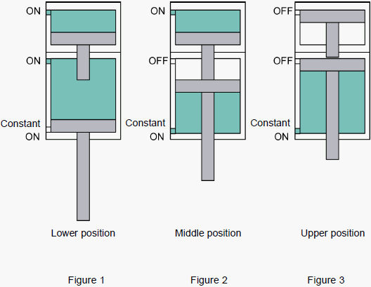
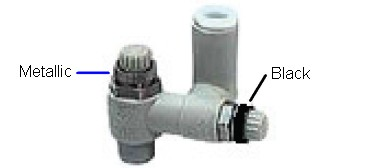
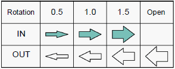
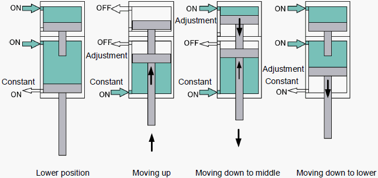

A7-2 How to adjust about loader tray Up / Down cylinder speed ( 2 )
Loader tray Up / Down cylinder speed adjustment for NS-8000
Loader: Tray Up/Down Cylinder Speed Adjustment Outline
Tray up/down cylinder has three positions (Upper, Middle, Lower) by inputting the air into the three ports (Upper, Middle, Lower).
Lower position : Air is supplied to the upper and middle ports. (Figure 1) Air is constantly supplied to the lower port but the middle port's air receiving area is larger than the lower port's, and for that, the cylinder moves down.
Middle position : Air is supplied to the upper port and constantly to the lower ports. (Figure 2) Air is constantly supplied to the lower port but the upper port's air receiving area is larger than the lower port's, and for that, the cylinder moves down.
Upper position : Moves up by the air constantly supplied to the lower
port. (Figure 3)

Adjustment
For the speed of the cylinder, use the needle of the speed controller. NS8000 employs the Dual Speed Controller which enables the control of two-way flow (Meter-in, Meter-out) by one speed controller.

1. Basic usage The control method varies depending on the color of the needle knob.
Metallic : Meter-out control (Speed control)
Black : Meter-in control (Spring out prevention)
2. Factory default Before shipment, the speed controller knob (needle rotation) is set in the following status.
Needle rotation from the fully closed speed controller

IN : Meter-in (Black knob)
OUT : Meter-out (Metallic knob)

3. Speed adjustment
[Lower -> Upper] To slow down the moving up speed:
Loosen the metallic knob of the speed controller in the middle port. Turn the adjustment needle to the right and control the air flow.
[Upper -> Middle] To slow down the moving down speed:
Loosen the black knob of the speed controller in the upper port. Turn the adjustment needle to the right and control the air flow.
[Middle > Lower] To slow down the moving down speed:
Loosen the metallic knob of the speed controller in the lower port. Turn the adjustment needle to the right and control the air flow.